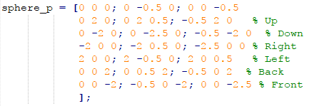
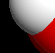

The final project is quite similar to the assignment3, both are all based on ray tracing. The difference is that the final project aims at configuring parameters to meet OpenGl's result, more specificly, you should generate an image with the left half rendered by OpenGL and the right half by yourself and at the same time, the junction should be continuous enough. Sounds really difficult, I try my best but am not sure whether I reach that.
1) Image Composition
I don't know how to render an image with left part by opengl while right part by my own implementation, so I take this way: using opengl to render a complete image, then I use matlab to render another complete image, finally compose the left of opengl's and the right of my. BTW, composition is done by matlab, so accuracy is beyond doubt.
2) OpenGL
OpenGL renders the scene by itself, all I did is setting the objects' color, position, and number and point lights' positions and some other parameters related to the light model, I will info these at 'Experimental Setup' part.
3) My(MatLab)
Comparing to OpengGL, I need to implement ray tracing to let objects visiable, about the theroy, you can see my 3rd assignment's report. click here
To see the complete implementation, you can download code at the demo page. click here
1) Image Size: 400*400
2) Objects: 7 'H2O' moleculars, the Oxygen atom is red(1, 0, 0) and radius 0.7, hydrogen atom is white(1, 1, 1) and radius 0.5.
3) Spheres' position matrix:
4) Camera postion: orign(0, 0, 0)
5) View angle: first rotate spheres 40 degree by Y-axis then 30 degree by X-axis.
6) Light postion: (-4, 4, -7)
7) Phong light model parameters: Ka = Kd = Ks = 1, n_shiny = 24, rc = 0.3
# You may notice the postions in cpp code and matlab code is different, due to the center symmetry, they are actually the same.
# To simulate the material, I did logarithmic transformation.
At your first sight, I am pretty sure you will not notice the difference between my and OpenGL's, even the composited image's left part and right part. but once you watch these closely, you will find the discontinuity at the junction. There are two differences that are a bit obvious if you have watched the two complete images, one is the shadow, the other is the size of light spot(in other words: color gradient). The shadow on OpenGL's seems darker than my and the light spots on each sphere seem larger than my. The root cause is obvious as I simulate material but don't actually use it.
Little difference at shadow and light spot(Left: OpenGL, Right: My)
Small discontinuity at junction
Configuring parameters is really a time-consuming work, especilly when there is a large amount.
Putting these aside, I'm really glad I have finished all computer
graphics projects and I learned a lot because I take all projects seriously, maybe I won't work on computer graphics in the future, but I do believe what I learned
can help me solve some other problems.